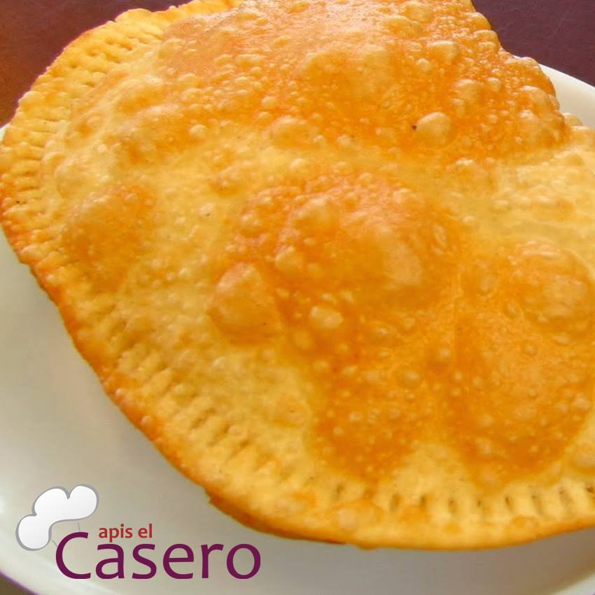

Con calidad, sabor tradicional y listo para servirse
Con calidad, sabor tradicional y listo para servirseBienvenidos a Apis el Casero!
Nuestro propósito de nuestro producto es de satisfacer a nuestros clientes en nuestros distintos centros de atención y también dar a conocer de nuestros productos con nuestra calidad y sabor tradicional y ser la mejor empresa de Apis de la ciudad.

Fidelizar a nuestros clientes con una mayor atención y comodidad.
Poder brindar un muy buen servicio al cliente, te representará, entre otras cosas, brindar al cliente un buen servicio, con un trato amable, un ambiente agradable, un trato personalizado y una rápida atención.
Lea este interesante articulo acerca de la historia del Api boliviano
Mire los beneficios del maiz morado, principal ingrediente de nuestro producto